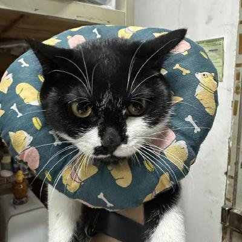

Kevin
数据分析 · 广东财经大学 Data Analytics · Guangdong University of Finance & Economics
我的兴趣在数据工具这一侧：把散落的、需要手工处理的表格和文档，变成能重复使用的流程。 作品集里的两个内部工具都是这么来的——它们跑在真实业务里、处理真实数据，所以源码不公开， 页面上讲的是设计和取舍。 My interest sits on the tooling side of data: taking scattered spreadsheets and documents that people process by hand, and turning them into something reusable. Both internal tools in the portfolio came from that. They run against real business data, so the source stays private and what's written up here is the design and the trade-offs.
经历Background
-
数据治理实习Data Governance Intern
GSR参与 HR SaaS 场景下的数据治理：合同字段提取、流程自动化、内部工具开发。 作品集里的两个工具都来自这段实习。 Data governance in an HR SaaS context: contract field extraction, process automation and internal tooling. Both tools in the portfolio came out of this internship.
-
审计实习Audit Intern
KPMG参与审计底稿整理与凭证抽查，接触函证流程。 Worked on audit working papers and voucher sampling, with exposure to the confirmation process.
-
正大杯市场调查与分析大赛Market Research & Analysis Competition
校赛一等奖First prize, university level课题为播客知识付费。负责数据采集与分析环节。 Topic: paid podcast knowledge products. Worked on data collection and analysis.
-
创新创业大赛Innovation & Entrepreneurship Competition
校赛银奖Silver prize, university level课题围绕乡村振兴与直播助农。 Topic: rural revitalisation through livestream-supported agriculture.
-
课题组科研Research Group
社会保障比较研究Comparative social security research参与社会保障政策的比较研究与文献整理。 Comparative research and literature work on social security policy.
用过的工具Tools I work with
| 场景Task | 用什么Stack |
|---|---|
| 数据处理与分析Data processing | Python（pandas、openpyxl）、SQL、Excel |
| 后端与接口Backend | Flask、FastAPI、SQLAlchemy、SQLite |
| 前端与桌面端Frontend / desktop | React、TypeScript、Electron、原生 JavaScript |
| 统计与建模Statistics | SPSS、AMOS |
| 数据可视化Visualisation | Recharts、matplotlib |